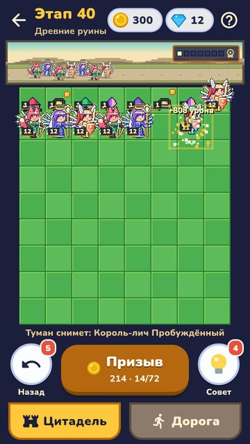

Пиксельные валькирии
Сливай пиксельных воительниц, собирай героинь и веди свой легион в рейд по фэнтези-миру!
На острове-цитадели перетащи воительницу на такую же, и они сольются в одну, сильнее и в новой броне. Сильнейшие сами выходят на кольцевую дорогу, бьются с монстрами и боссами и приносят добычу, а остров растёт, когда после побед отступает туман. Пиксельная merge-стратегия, в которую можно играть без интернета.

- Три ветви бойцов по кругу «камень, ножницы, бумага»: авангард, рейнджеры и арканистки, по 12 уровней у каждой.
- 8 героинь-командиров со своей ультой. Открываются за победы над боссами и за осколки душ, без всякой случайности.
- 60 этапов в 15 главах: лес, огненные пустоши, кристальные пещеры и древние руины, босс в конце каждой главы. Дальше дорога не кончается.
- Бой идёт сам: ты сливаешь, призываешь, собираешь отряд и вовремя жмёшь ульту.
- Пока тебя нет, легион продолжает поход: добыча за время отсутствия, до 8 часов.
- Рейд дня: одна и та же задача для всех игроков.
- Играй без интернета, на русском и английском. Без покупок.